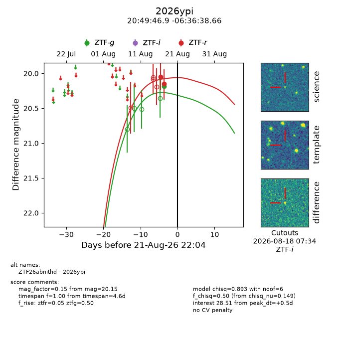
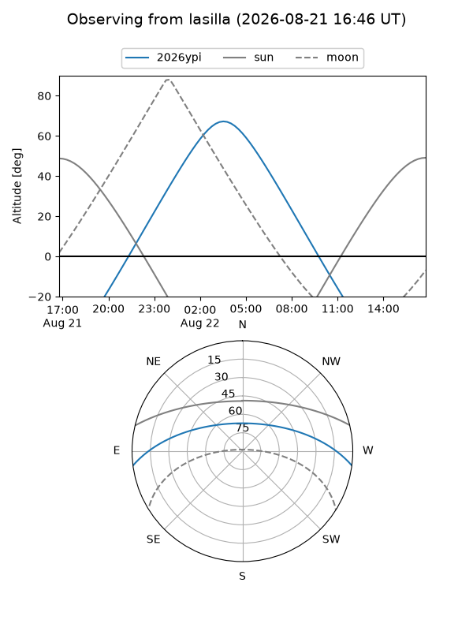
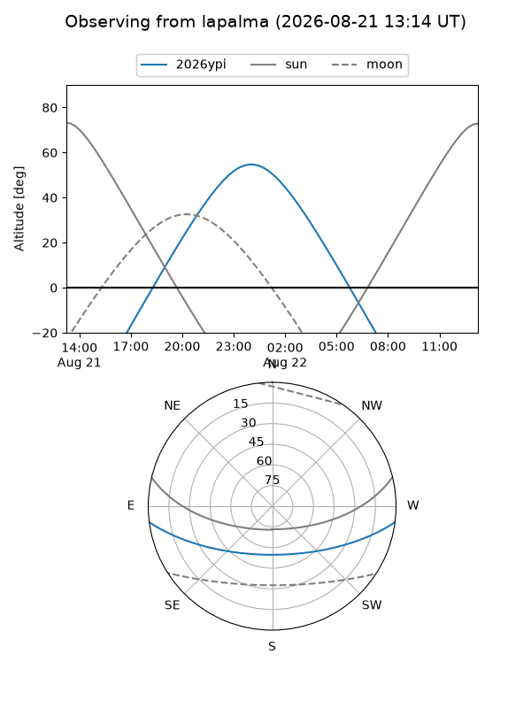
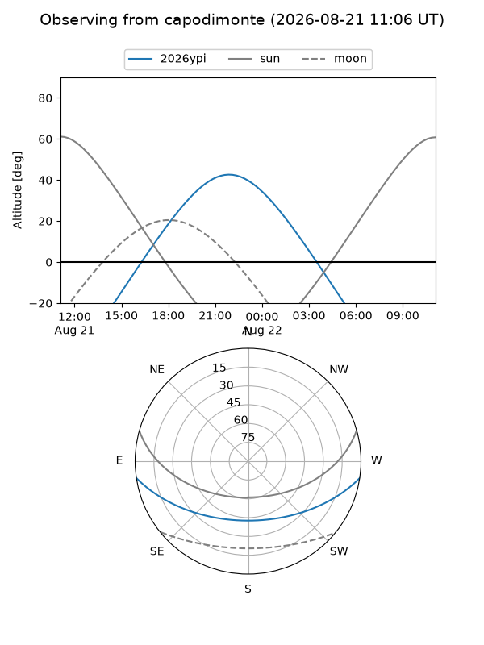
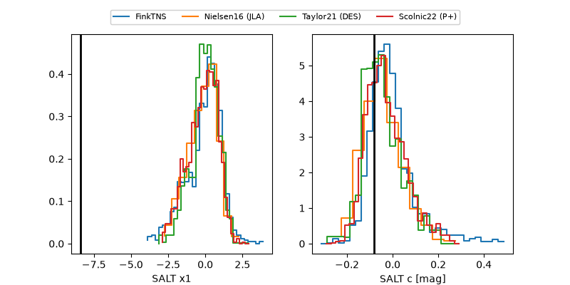

2026ypi
Target 2026ypi at 2026-08-22 09:42
Aliases and brokers:
FINK-ZTF: ztf.fink-portal.org/ZTF26abnithd
Lasair-ZTF: lasair-ztf.lsst.ac.uk/objects/ZTF26abnithd
ALeRCE-ZTF: alerce.online/object/ZTF26abnithd
YSE-PZ: ziggy.ucolick.org/yse/transient_detail/2026ypi
TNS name: wis-tns.org/object/2026ypi
Direct TNS query: direct search
alt names
ZTF26abnithd (ztf,fink_ztf)
2026ypi (tns,yse)
Coordinates:
equatorial (ra, dec) = 312.4454,-6.61074
equatorial (HMS+DMS) = 20:49:46.90,-06:36:38.66
galactic (l, b) = (40.9171,-29.27390)
Flags:
TNS type: nan
peak dt: +0.9
Photometry:
last ztfg=20.18, ztfr=20.15
1 ztfg, 2 ztfr detections
Lightcurve

Visibility



Additional plots
